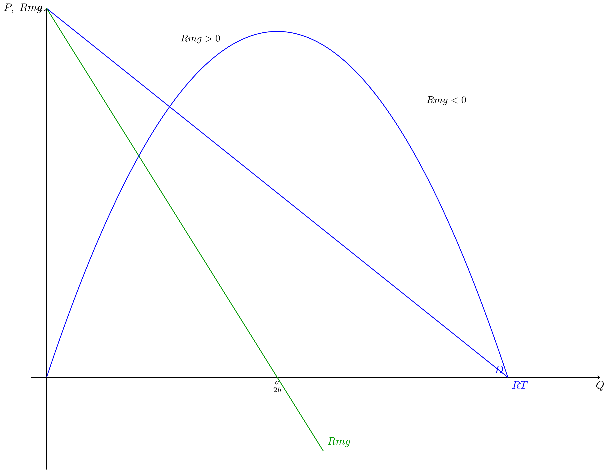
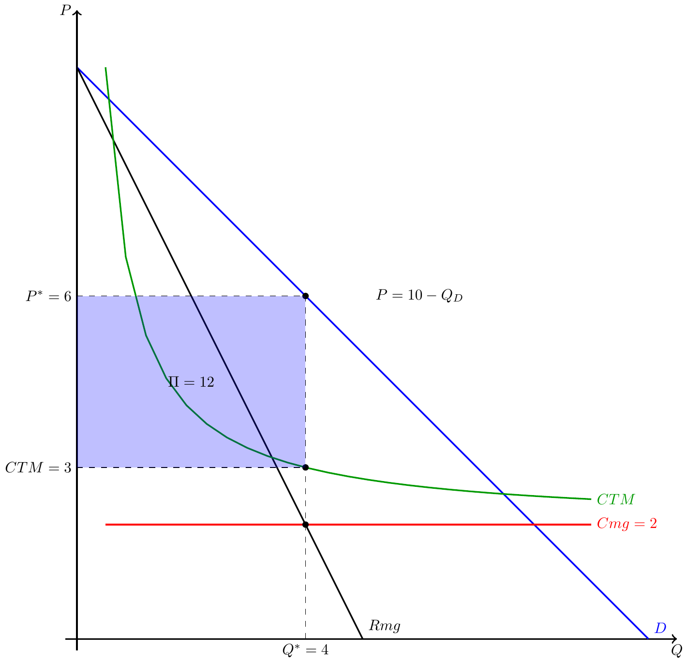
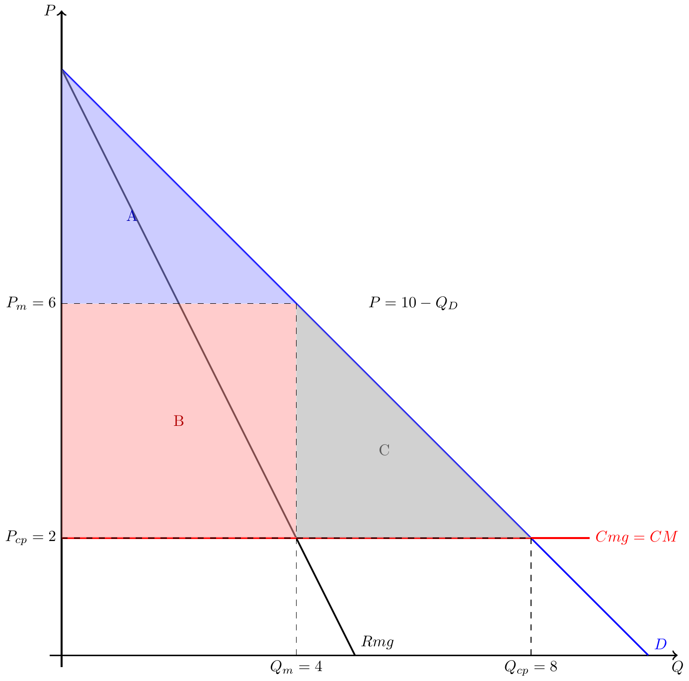

Microeconomia
Aula 20 — O Problema do Monopolista
1 Estruturas de Mercado
1.1 Estruturas de Mercado: Um Espectro
| Característica | Conc. Perfeita | Oligopólio | Conc. Monopolística | Monopólio |
|---|---|---|---|---|
| N.º de empresas | Muitas | Poucas | Muitas | Uma |
| Produto | Homogéneo | Homo/Difer. | Diferenciado | Único |
| Poder de mercado | Nenhum | Elevado | Algum | Máximo |
| Barreiras entrada | Nenhuma | Elevadas | Baixas | Intransponíveis |
| P vs. Cmg | \(P = Cmg\) | \(P > Cmg\) | \(P > Cmg\) | \(P > Cmg\) |
Note
O monopólio é o caso polar oposto à concorrência perfeita. Analisamos os dois extremos para depois entender os casos intermédios.
1.2 Barreiras à Entrada
Para existir monopólio, a entrada de rivais tem de ser impedida:
- Legais: licenças exclusivas, concessões do Estado, patentes
- Estruturais: custos de entrada muito elevados
- Economias de escala: tecnologia que favorece uma única empresa grande (menção apenas, não é o foco desta aula)
Important
Sem barreiras à entrada, lucros positivos atrairiam concorrentes e o monopólio desapareceria. As barreiras são a condição necessária.
2 Receita no Monopólio
2.1 Concorrência Perfeita vs. Monopólio
Em concorrência perfeita, a empresa é price-taker:
\[P = \bar{P} \quad \Rightarrow \quad RT = \bar{P} \cdot Q\]
. . .
O monopolista enfrenta a curva de procura do mercado \(\rightarrow\) é price-maker:
\[P = P(Q) \quad \text{(função decrescente)} \quad \Rightarrow \quad RT = P(Q) \cdot Q\]
. . .
Para vender mais, o monopolista tem de baixar o preço, e essa descida aplica-se a todas as unidades vendidas.
2.2 Receita Total e Receita Marginal
Com procura inversa linear \(P = a - bQ\):
\[RT = (a - bQ) \cdot Q = aQ - bQ^2\]
. . .
A receita marginal é:
\[Rmg = \frac{dRT}{dQ} = a - 2bQ\]
. . .
Important
Rmg tem o dobro do declive (em módulo) da curva de procura inversa.
Se \(P = a - bQ\), então \(Rmg = a - 2bQ\).
2.3 Rmg < P sempre que a procura tem inclinação negativa
\[Rmg = P + Q \frac{dP}{dQ}\]
. . .
Como \(\dfrac{dP}{dQ} < 0\) e \(Q > 0\), temos \(Q \dfrac{dP}{dQ} < 0\), portanto:
\[\boxed{Rmg < P}\]
. . .
Intuição: para vender uma unidade adicional, o monopolista baixa o preço. O ganho dessa unidade é \(P\), mas perde \(Q \cdot |dP/dQ|\) nas unidades anteriores.
2.4 RT e Rmg — Gráfico
2.5 Rmg, Zona Elástica e Zona Rígida
\[Rmg = P\!\left(1 + \frac{1}{\varepsilon_D}\right) = P\!\left(1 - \frac{1}{|\varepsilon_D|}\right)\]
. . .
| Zona da procura | \(|\varepsilon_D|\) | \(Rmg\) | \(RT\) ao aumentar \(Q\) |
|---|---|---|---|
| Elástica | \(> 1\) | \(> 0\) | Aumenta |
| Unitária | \(= 1\) | \(= 0\) | Máxima |
| Rígida | \(< 1\) | \(< 0\) | Diminui |
. . .
Note
O monopolista nunca opera na zona rígida: baixar o preço aumentaria \(Q\) mas reduziria \(RT\) — e os custos também aumentariam. Logo, \(\Pi\) diminuiria de forma garantida.
3 Optimização do Monopolista
3.1 Condição de Optimização
O monopolista maximiza o lucro:
\[\max_Q \ \Pi = RT(Q) - CT(Q)\]
. . .
Condição de primeira ordem:
\[\frac{d\Pi}{dQ} = 0 \iff \underbrace{\frac{dRT}{dQ}}_{Rmg} - \underbrace{\frac{dCT}{dQ}}_{Cmg} = 0\]
\[\boxed{Rmg = Cmg}\]
. . .
Important
A regra \(Rmg = Cmg\) é a mesma que em concorrência perfeita.
A diferença: em CP, \(Rmg = P\); em monopólio, \(Rmg < P\).
Logo, o preço de monopólio está acima do custo marginal.
3.2 Porque não existe Curva de Oferta no Monopólio?
Em CP, a curva de oferta é \(P = Cmg(Q)\): para cada preço, a empresa escolhe \(Q\).
. . .
No monopólio, o preço não é dado \(\rightarrow\) é determinado pela procura:
\[Q^* \leftarrow Rmg = Cmg \quad \Rightarrow \quad P^* = D(Q^*)\]
. . .
O mesmo \(Q^*\) pode corresponder a preços diferentes conforme a procura mude: não há uma relação unívoca preço-quantidade.
Note
Não existe curva de oferta do monopolista. A decisão de produção depende sempre da curva de procura enfrentada.
3.3 Determinação de Q*, P* e Lucro — Gráfico

3.4 Leitura do Gráfico: Passo a Passo
- Encontrar \(Q^*\): interseção de \(Rmg\) e \(Cmg\) \(\rightarrow\) \(Q^* = 4\)
- Subir até à curva de procura \(D\) para obter \(P^*\): \(P^* = 6\)
- Ler \(CTM(Q^*) = 3\) na curva de custo médio total
- Lucro: \(\Pi = (P^* - CTM) \times Q^* = (6-3) \times 4 = 12\)
. . .
Note
Note que o ponto de optimização \(Rmg = Cmg\) fica abaixo do preço. O preço lê-se sempre na curva de procura à quantidade óptima.
4 Monopólio vs. Concorrência Perfeita
4.1 Comparação de Excedentes

4.2 Tabela Comparativa
| Concorrência Perfeita | Monopólio | |
|---|---|---|
| Quantidade | \(Q_{cp} = 8\) | \(Q_m = 4\) |
| Preço | \(P_{cp} = 2\) | \(P_m = 6\) |
| Excedente do Consumidor | \(32\) (A+B+C) | \(8\) (A) |
| Excedente do Produtor | \(0\) | \(16\) (B) |
| Excedente Total | \(32\) | \(24\) |
| Perda de Excedente (DWL) | — | \(8\) (C) |
. . .
Important
O monopólio é ineficiente: a área C representa valor destruído — nem consumidores nem produtor a obtêm. Há transacções mutuamente vantajosas que não se realizam porque \(P_m > Cmg\).
4.3 Por que o Monopólio é Ineficiente?
Em concorrência perfeita: \(P = Cmg\): todas as unidades para as quais a disposição a pagar supera o custo são produzidas.
. . .
Em monopólio: \(P > Cmg\), entre \(Q_m = 4\) e \(Q_{cp} = 8\), há unidades cujo valor para o consumidor (\(< P_m\) mas \(> Cmg\)) nunca são produzidas.
. . .
Note
O produtor não produz essas unidades porque baixar o preço implicaria também baixá-lo nas unidades anteriores: o mecanismo de price-making gera a ineficiência.
5 Exercícios
5.1 Exercício 1 — Escolha Múltipla
Uma empresa monopolista enfrenta a procura \(P = 12 - 2Q\) e tem custo marginal constante \(Cmg = 4\). A quantidade óptima de produção é:
- \(Q^* = 2\)
- \(Q^* = 3\)
- \(Q^* = 4\)
- \(Q^* = 6\)
5.2 Solução — Exercício 1
\(Rmg = 12 - 4Q\) (declive duplo da procura inversa).
Condição: \(Rmg = Cmg \Rightarrow 12 - 4Q = 4 \Rightarrow Q^* = 2\).
Resposta: (a)
Preço: \(P^* = 12 - 2(2) = 8\).
5.3 Exercício 2 — Escolha Múltipla
Comparando monopólio com concorrência perfeita (mesmos custos e procura), é sempre verdade que:
- O monopolista tem custos marginais mais elevados
- O preço de monopólio é superior ao preço de concorrência perfeita
- O excedente do produtor é nulo em monopólio
- O excedente total é igual nos dois casos
5.4 Solução — Exercício 2
- Falso — os custos são iguais por hipótese
- (b) Verdadeiro — \(P_m > P_{cp}\), uma vez que \(Rmg < P\) leva o monopolista a produzir menos e cobrar mais
- Falso — o excedente do produtor em monopólio é positivo (é precisamente a razão pela qual o monopólio é preferível para o produtor)
- Falso — o excedente total é menor em monopólio (existe DWL)
Resposta: (b)
5.5 Exercício de Desenvolvimento
Uma empresa monopolista opera num mercado com procura inversa \(P = 10 - Q\).
Os seus custos são: \(CT = 2Q + 4\) (custo fixo \(CF = 4\), custo marginal \(Cmg = 2\)).
Alíneas:
- Derive a expressão da receita marginal (\(Rmg\)).
- Determine a quantidade óptima \(Q^*\) e o preço \(P^*\).
- Calcule o lucro económico \(\Pi^*\).
- Calcule o excedente do consumidor e o excedente do produtor em monopólio.
- Determine o equilíbrio de concorrência perfeita (\(Q_{cp}\), \(P_{cp}\)).
- Calcule a perda de excedente (DWL) gerada pelo monopólio. Interprete.
5.6 Solução — Exercício de Desenvolvimento
a) \(RT = (10-Q)Q = 10Q - Q^2 \Rightarrow Rmg = 10 - 2Q\)
. . .
b) \(Rmg = Cmg \Rightarrow 10 - 2Q = 2 \Rightarrow Q^* = 4\)
\(P^* = 10 - 4 = 6\)
. . .
c) \(CTM(4) = 2 + 4/4 = 3 \Rightarrow \Pi^* = (P^* - CTM) \cdot Q^* = (6-3)\cdot 4 = 12\)
Ou directamente: \(\Pi = RT - CT = 6 \cdot 4 - (2 \cdot 4 + 4) = 24 - 12 = 12\) ✓
. . .
d) \(XD_m = \frac{1}{2}(10-6)\cdot 4 = 8\) (triângulo acima de \(P^*\))
\(XS_m = (P^* - Cmg)\cdot Q^* = (6-2)\cdot 4 = 16\) (rectângulo, \(Cmg\) constante)
. . .
e) \(P = Cmg \Rightarrow 10 - Q = 2 \Rightarrow Q_{cp} = 8,\ P_{cp} = 2\)
. . .
f) \(DWL = \frac{1}{2}(P_m - P_{cp})(Q_{cp} - Q_m) = \frac{1}{2}(6-2)(8-4) = 8\)
O monopólio impede a realização de transacções entre \(Q=4\) e \(Q=8\) que seriam mutuamente vantajosas (disposição a pagar \(> Cmg = 2\)), destruindo \(8\) unidades de excedente total.